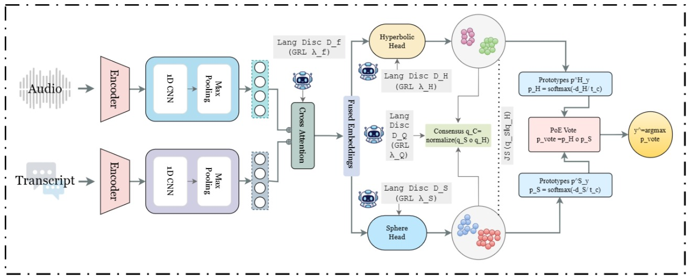
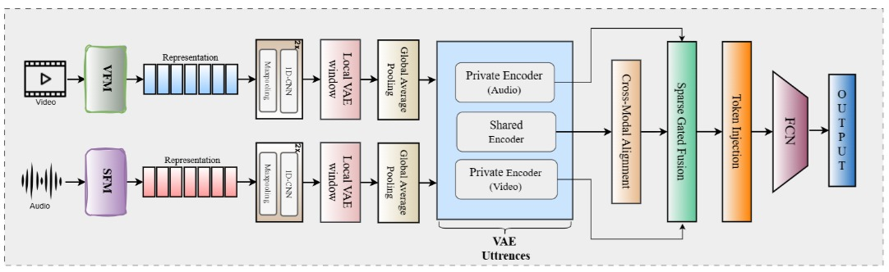
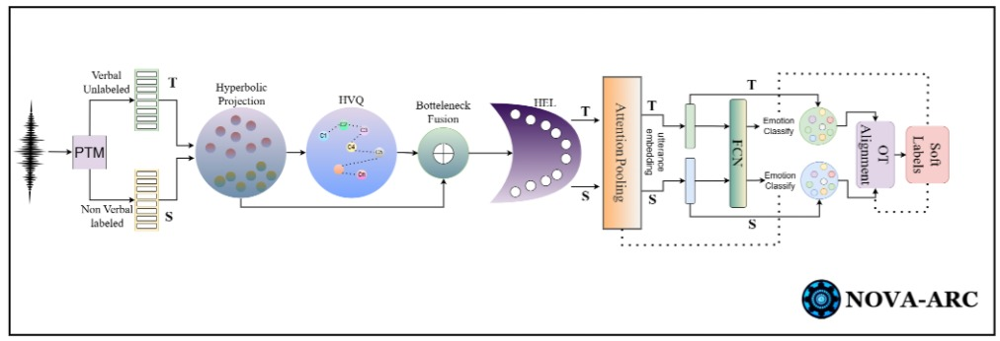
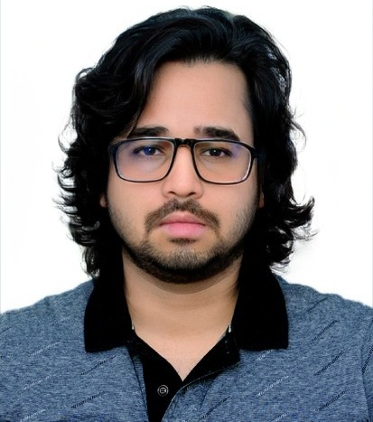

Mohd Mujtaba Akhtar
Speech & Audio AI · mmakhtar.research@gmail.com
I'm a postgraduate researcher at Ulster University, working with Dr Muskaan Singh, and previously a research associate at IIIT-Delhi. My work asks a single question in many settings: what happens when we stop assuming that representations of speech and physiological signals live in flat Euclidean space.
Foundation models produce embeddings with real structure — hierarchies of generator families, angular periodicities left by vocoders, manifolds of clinical severity. I build geometry-aware methods that respect that structure, using hyperbolic and spherical embeddings, mixed-curvature projections, optimal transport and disentangled multimodal alignment, and I test whether they buy genuine generalisation rather than benchmark gains.
In practice this runs along two tracks. In synthetic-media forensics I work on detecting and attributing generated speech across unseen generators, neural audio codecs, languages and speakers — and on the benchmarks the field needs to measure that honestly, including healthcare, Indic and South-East Asian codec-deepfake datasets. In health and paralinguistic speech the same machinery supports cross-lingual Alzheimer's detection, oro-facial neurological assessment, tuberculosis screening from cough, heart-sound analysis and emotion recognition in low-resource languages.
This work appears at ACL, EACL, IJCAI, INTERSPEECH, ICASSP and EUSIPCO, and in ACM Transactions on Computing for Healthcare. DIVINE received the Social Impact Award at EACL 2026. I serve on the programme committee for IMPACT-SPEECH 2026 at EMNLP and review for ACM MM, ICASSP and ICME.
Research interests
- Geometric deep learning
- Synthetic speech forensics
- Speech foundation models
- Emotional speech understanding
- Clinical speech analysis
- Multimodal alignment
Recent
- May 2026 Four papers accepted at INTERSPEECH 2026 as first author.
- May 2026 Three papers accepted at ACL 2026 (1 Main, 2 Findings).
- Apr 2026 One paper accepted at IJCAI 2026 as first author.
- Feb 2026 Social Impact Award at EACL 2026 for DIVINE.
- Jun 2025 Seven papers accepted at INTERSPEECH 2025.
Selected publications
-

INTERSPEECH 2026 -

EACL 2026 -

ACL 2026

Ulster University (remote)
New Delhi, India
Conference publications
Reverse chronological · * denotes equal contribution
-
From Signals to Patterns: Non-Invasive Tuberculosis Detection from Cough Audio using Bandit-Weighted Hyperbolic Prototypes
INTERSPEECH 2026
-
Synergizing Zero-Shot Cross-Lingual Alzheimer Detection with Language-Invariant Multimodal Bi-Geometric Adversarial Learning
INTERSPEECH 2026 PDF
-
Bridging the Age Gap: Towards Detecting Neural Audio Codec Synthesized Elderly Speech Deepfake
INTERSPEECH 2026
-
Towards Detecting Neural Audio Codec Synthesized Heart Sounds
INTERSPEECH 2026
-
Bridging the SEA Gap: An Initial Benchmark for Neural Audio Codec-Synthesized Speech Deepfakes in South-East Asian Languages
IJCAI 2026
-
Prosody as Supervision: Bridging the Non-Verbal–Verbal Gap for Multilingual Speech Emotion Recognition
ACL 2026 Main PDF
-
HCFD: A Benchmark for Audio Deepfake Detection in Healthcare
ACL 2026 Findings
-
Indic-CodecFake meets SATYAM: Towards Detecting Neural Audio Codec Synthesized Speech Deepfakes in Indic Languages
ACL 2026 Findings
- DIVINE: Coordinating Multimodal Disentangled Representations for Oro-Facial Neurological Disorder Assessment
-
Bridging Attribution and Open-Set Detection using Graph-Augmented Instance Learning in Synthetic Speech
EACL 2026 Main
-
Curved Worlds, Clear Boundaries: Generalizing Speech Deepfake Detection using Hyperbolic and Spherical Geometry Spaces
IJCNLP-AACL 2025 Main PDF
We address generalizable audio deepfake detection across diverse synthesis paradigms, including conventional TTS and modern diffusion or flow-matching generators. Prior work has mostly targeted individual synthesis families and often fails to generalise due to overfitting to generation-specific artifacts. We hypothesise that synthetic speech, irrespective of origin, leaves shared structural distortions in the embedding space that can be aligned through geometry-aware modelling. RHYME fuses utterance-level embeddings from diverse pretrained encoders using non-Euclidean projections, mapping representations into hyperbolic and spherical manifolds and fusing via Riemannian barycentric averaging. RHYME sets new state of the art in cross-paradigm detection.
-
Towards Attribution of Generators and Emotional Manipulation in Cross-Lingual Synthetic Speech using Geometric Learning
IJCNLP-AACL 2025 Findings PDF
We address fine-grained traceback of emotional and manipulation characteristics from synthetically manipulated speech. MiCuNet integrates speech foundation model embeddings with spectrogram-based auditory features through a mixed-curvature projection spanning hyperbolic, Euclidean and spherical spaces, guided by learnable temporal gating. In a multitask setup it simultaneously predicts original emotions, manipulated emotions and manipulation sources on the EmoFake dataset across English and Chinese subsets, consistently surpassing conventional fusion strategies. To our knowledge this is the first curvature-adaptive framework for multitask tracking in synthetic speech.
-
PARROT: Synergizing Mamba and Attention-based SSL Pre-Trained Models via Parallel Branch Hadamard Optimal Transport for Speech Emotion Recognition
INTERSPEECH 2025 PDF
Mamba-based self-supervised pre-trained models achieve comparable or superior performance to attention-based models for speech emotion recognition. We hypothesise that leveraging the complementary strengths of both will exceed the fusion of homogeneous attention-based models. PARROT integrates parallel branch fusion with optimal transport and the Hadamard product, achieving state-of-the-art results against individual models, homogeneous fusion and baseline fusion techniques.
-
SNIFR: Boosting Fine-Grained Child Harmful Content Detection Through Audio-Visual Alignment with Cascaded Cross-Transformer
INTERSPEECH 2025 PDF
Malicious users evade moderation systems by embedding unsafe content in minimal frames. While prior research has focused on visual cues, audio features remain underexplored. We embed audio cues with visual for fine-grained child harmful content detection and introduce SNIFR, which employs a transformer encoder for intra-modality interaction followed by a cascaded cross-transformer for inter-modality alignment, achieving superior performance over unimodal and baseline fusion methods.
-
HYFuse: Aligning Heterogeneous Speech Pre-Trained Representations in Hyperbolic Space for Speech Emotion Recognition
INTERSPEECH 2025 PDF
Compression-based representations from neural audio codecs such as EnCodec capture acoustic features like pitch and timbre, while representation-learning-based representations from models such as WavLM encode high-level semantic and prosodic information. Their fusion has not been explored for speech emotion recognition. HYFuse fuses the two by transforming them into hyperbolic space; fusing x-vector and SoundStream achieves top performance against individual representations and homogeneous fusion.
-
Investigating the Reasonable Effectiveness of Speaker Pre-Trained Models and their Synergistic Power for SingMOS Prediction
INTERSPEECH 2025 PDF
We focus on singing voice mean opinion score prediction. Prior work has not explored speaker recognition pre-trained models such as x-vector and ECAPA; we hypothesise these will be most effective, since speaker recognition pre-training equips them to capture fine-grained vocal features from synthesised singing voices. Experiments validate the hypothesis. We also introduce BATCH, a fusion framework using Bhattacharyya distance, which sets state of the art.
-
Towards Machine Unlearning for Paralinguistic Speech Processing
INTERSPEECH 2025 PDF
We pioneer the study of machine unlearning for paralinguistic speech processing, focusing on speech emotion recognition and depression detection. SISA++ extends the previous state-of-the-art SISA method by merging models trained on different shards with weight averaging, preserving performance better after unlearning on CREMA-D and E-DAIC. We also present actionable recommendations for selecting feature representations and downstream architectures that mitigate degradation after unlearning.
-
Towards Fusion of Neural Audio Codec-based Representations with Spectral Features for Heart Murmur Classification via Bandit-based Cross-Attention
INTERSPEECH 2025 PDF
We hypothesise that combining neural audio codec representations such as EnCodec with spectral features such as MFCC yields superior heart murmur classification, since codec representations capture fine-grained acoustic patterns while spectral features focus on frequency-domain properties. BAOMI uses a bandit-based cross-attention mechanism in which an agent weights the most important heads in multi-head cross-attention, mitigating noise, and sets new state of the art.
-
Towards Source Attribution of Singing Voice Deepfake with Multimodal Foundation Models
INTERSPEECH 2025 PDF
We introduce the task of singing voice deepfake source attribution. We hypothesise that multimodal foundation models such as ImageBind and LanguageBind are most effective, as cross-modality pre-training better captures source-specific characteristics such as timbre, pitch manipulation and synthesis artifacts. COFFE employs Chernoff distance as a novel loss for effective fusion of foundation models, attaining top performance against individual models and baseline fusion methods.
-
Are Mamba-based Audio Foundation Models the Best Fit for Non-Verbal Emotion Recognition?
EUSIPCO 2025 PDF
We investigate Mamba-based audio foundation models for non-verbal vocal sounds emotion recognition for the first time, hypothesising that state-space modelling captures intrinsic emotional structures more effectively than attention, which may amplify irrelevant patterns. Experiments validate this. We further propose RENO, which uses Rényi divergence as a novel loss for aligning foundation models and self-attention for better intra-representation interaction, setting state of the art through heterogeneous fusion.
-
Source Tracing of Synthetic Speech Systems Through Paralinguistic Pre-Trained Representations
EUSIPCO 2025 PDF
Each synthetic speech source embeds distinctive paralinguistic features into its output, reflecting the underlying generation model. We hypothesise that representations from models pre-trained for paralinguistic speech processing will be most effective for source tracing. Our comparative study across paralinguistic, monolingual, multilingual and speaker recognition models validates this. TRIO fuses models using a gated mechanism for adaptive weighting, canonical correlation loss for alignment and self-attention for refinement; fusing TRILLsson and x-vector sets new state of the art.
-
Strong Alone, Stronger Together: Synergizing Modality-Binding Foundation Models with Optimal Transport for Non-Verbal Emotion Recognition
ICASSP 2025 PDF
We investigate multimodal foundation models for emotion recognition from non-verbal sounds, hypothesising that joint pre-training across modalities better interprets subtle emotional cues that are ambiguous to audio-only models. MATA (Intra-Modality Alignment through Transport Attention) combines LanguageBind and ImageBind, reporting accuracies of 76.47%, 77.40% and 75.12% and F1-scores of 70.35%, 76.19% and 74.63% on ASVP-ESD, JNV and VIVAE, setting state of the art on all three benchmarks.
-
Are Multimodal Foundation Models All That Is Needed for EmoFake Detection?
APSIPA-ASC 2025 PDF
We investigate multimodal foundation models for EmoFake detection, hypothesising they outperform audio foundation models because cross-modal pre-training helps them recognise unnatural emotional shifts and inconsistencies in manipulated audio. Experiments confirm this. SCAR introduces a nested cross-attention mechanism in which representations interact at two sequential stages, plus a self-attention refinement module, achieving state of the art over standalone models and conventional fusion.
-
Rethinking Cross-Corpus Speech Emotion Recognition Benchmarking: Are Paralinguistic Pre-Trained Representations Sufficient?
APSIPA-ASC 2025 PDF
Recent benchmarks evaluating pre-trained models for cross-corpus speech emotion recognition have overlooked models pre-trained for paralinguistic speech processing, raising reliability concerns since emotion recognition is inherently paralinguistic. Analysing paralinguistic, monolingual, multilingual and speaker recognition representations, we find TRILLsson outperforms the others, reinforcing the need to include paralinguistic models in cross-corpus benchmarks.
-
Investigating Polyglot Speech Foundation Models for Learning Collective Emotion from Crowds
APSIPA-ASC 2025 PDF
We investigate polyglot speech foundation models for crowd emotion recognition, hypothesising that pre-training on diverse languages and accents suits the noisy acoustic environments characteristic of crowd settings. Comparing polyglot, monolingual and speaker recognition models across audio durations of 1 s, 500 ms and 250 ms, polyglot models consistently outperform their counterparts, excelling even with extremely short inputs.
-
Beyond Speech and More: Investigating the Emergent Ability of Speech Pre-Trained Models for Classifying Physiological Time-Series Signals
APSIPA-ASC 2025 PDF
We evaluate speech foundation models on a challenging out-of-domain task: classifying physiological time-series signals. We test two hypotheses — that these models generalise to physiological signals by capturing shared temporal patterns, and that multilingual models outperform others due to greater pre-training variability. Experiments on stress recognition using ECG, EMG and EDA show models trained on foundation-model representations outperform those trained on raw signals, with multilingual models achieving the highest accuracy.
-
NeuRO: An Application for Code-Switched Autism Detection in Children
INTERSPEECH 2024 Show & Tell PDF
Code-switching is a common communication phenomenon where individuals alternate between languages within a single conversation, and detecting autism spectrum disorder in code-switched scenarios presents unique challenges. We build NeuRO, an application that detects potential signs of autism in code-switched conversations, facilitating early intervention and support.
-
Speech-Based Alzheimer's Disease Classification System with Noise-Resilient Features Optimization
AICS 2023 PDF
Timely identification of speech abnormalities associated with Alzheimer's disease supports effective therapy and disease management. Using the MFCC framework alongside prosodic and statistical features, we extract acoustic properties from pre-processed speech from the Pitt Corpus of DementiaBank and examine feature optimisation in clean and noise-enhanced environments. The combination of MFCC, statistical and prosodic features achieves 98.3% accuracy with a Random Forest classifier.
Journal publications
Reverse chronological
-
Uc-PrUn: Uncertainty-Calibrated Machine Unlearning using Vision–Language Models for Clinical Decision Support
ACM Trans. Computing for Healthcare 2026 PDF
-
Optimizing Audio Encryption Efficiency: A Novel Framework Using Double DNA Operations and Chaotic Map-Based Techniques
Computers & Electrical Engineering 2025 PDF
Awards & service
Selected
- Social Impact Award, EACL 2026 — for DIVINE: Coordinating Multimodal Disentangled Representations for Oro-Facial Neurological Disorder Assessment.
- Best Paper Award, ISDIA — for research from my M.Tech thesis on audio deepfake detection.
- Program Committee, IMPACT-SPEECH 2026 — workshop on bias in speech LLMs, co-located with EMNLP 2026.
- Reviewer — ACM MM 2026, ACL 2026 Industry Track, ICASSP 2026, ICME 2025/2026, Neural Computing and Applications.
- Volunteer, ISCA Student Advisory Committee — scripting, hosting discussions, post-editing.
- Attended EUSIPCO 2025, Palermo, Italy (8–12 Sep).
- Virtusa Engineering Excellence Scholarship — sole recipient in the college, awarded for all-round academic and co-curricular performance.
- First place, National Science Fair — autonomous navigation system using haptic feedback to assist visually impaired users.
News
Reverse chronological
- May 2026Four papers accepted at INTERSPEECH 2026 as first author.
- May 2026Three papers accepted at ACL 2026 (1 Main, 2 Findings) as first author.
- Apr 2026One paper accepted at IJCAI 2026 as first author.
- Feb 2026Received the Social Impact Award at EACL 2026 for DIVINE.
- Jan 2026Two papers accepted at EACL 2026 (Main) as first author.
- Jan 2026Journal paper Uc-PrUn accepted at ACM Transactions on Computing for Healthcare.
- Oct 2025Two papers accepted at IJCNLP-AACL 2025 as first author.
- Sep 2025Attended EUSIPCO 2025 in Palermo, Italy.
- Aug 2025Four papers accepted at APSIPA-ASC 2025 as first author.
- Jun 2025Seven papers accepted at INTERSPEECH 2025, six as first author.
- Jun 2025Two papers accepted at EUSIPCO 2025 as first author.
- Jun 2025One paper accepted at ICASSP 2025 as second author.
- Jan 2025Published an audio-encryption framework in Computers & Electrical Engineering.
- Sep 2024Research Intern at Reliance Jio AICoE, developing MATA for non-verbal emotion recognition.
- Jun 2024Computer Vision Intern at Suratec, Bangkok — golf swing phase segmentation from monocular video.
- May 2024Graduated B.Tech (UPES), First Class with Distinction.
- Jan 2024Joined IIIT-Delhi as Research Associate in the Usable Security Group.
- Nov 2023Began research at Ulster University with Dr Muskaan Singh.